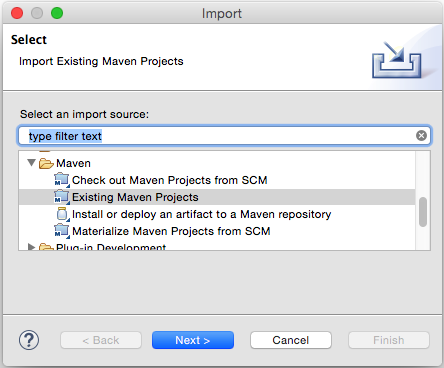
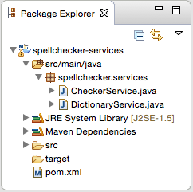
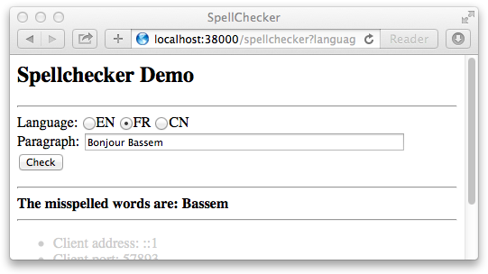
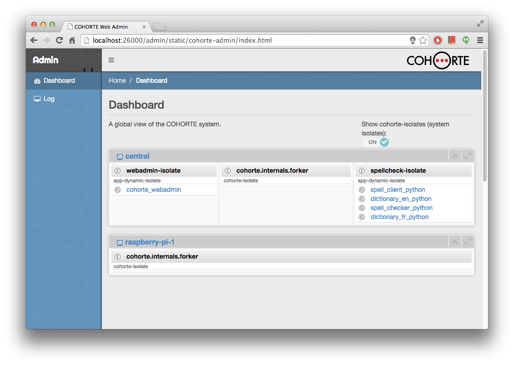

Home > Documentation > Tutorials > Spellchecker
COHORTE for Java
Welcome to COHORTE for Java! With COHORTE, you can build modular and resilient applications using the Java programming language, and take advantage of the many benefits of the COHORTE approach (see what is COHORTE?).
If you are already familiar with OSGi, COHORTE components are a simple Apache Felix iPOJO components. The only thing you should do to be able to run your components in COHORTE is to not instantiate your them manually (using @Instantiate annotation for instance. COHORTE will do it for you and add many features to your final application.
Spellchecker application
The application to develop in this tutorial provides a web interface in which users can check the spell of their sentences in one or another language. It concists of three main type of components as shown in the following picture:

- Dictionary components: implementing and providing the Dictionary Service. Each implementation indicates the language of the dictionary as a service property.
- Spell Checker: implements the Checker Service which take as input a sentence of words, and by using the Dictionary Service it verifies the existance of misspelled words. It uses the adequate provided Dictionary Services depending on user language choice. A list of missplened words are returned by this service.
- Spell Client: is a simple web interface that shows a form to the final user to test the application. This component uses the Checker Service for the application’s logic part, and it also requires an HTTP Service to publish the web interface and response to the form requests initiated by the user.
The required HTTP Service for the last component Spell Client is provided natively by the COHORTE runtime. No need to implement it! In the following, we show you how the different components are implemented in Python or Java programming languages.
Setup
The first thing we need to do is to set up the development environment. We will be using Apache Maven, although you can use whatever build tool you feel confortable using. If you wish to use something else to build this tutorial (such as Ant), you will need to manually account for all the needed dependencies.
Spellchecker Java projects
In order to implement the spellchecker demo application, we decided to decouple it in different bundles (jars) for more modularity and to be able to dynamically update or replace some parts of the application without stopping the system. These bundles are:
spellchecker-servicesspellchecker-en-dictionaryspellchecker-fr-dictionaryspellchecker-checkerspellchecker-client
In the first bundle spellchecker-services we will put only the Java Interfaces for the Dictionary Service and Checker Service as explained in the picture above. The Services are supposed to not change over time. The other bundles uses or implements this services to ensure the application’s functionality.
In the following, we will show you how to implement each of this bundles.
spellchecker-services
To create a Maven project, simply type the following command (ensure to have Apache Maven installed).
$ cohorte-create-java-project spellchecker spellchecker-services 1.0.0
The first argument for the cohorte-create-java-project command is the groupId of your Maven project, the second one is the artifactId, and the last one is its version.
This command will generate an empty Maven project template for a COHORTE project spellchecker-services which has the following structure:
pom.xml: an XML file that contains information about the project and configuration details used by Maven to build the project.src/main/java/mypackage/: this folder will contain Java source code of the bundle.
Any maven project is identified by it groupId, artifactId, and version number. You find this information in the pom.xml file. Any dependencies to other libraries should be declared also in the pom.xml file. Maven retrieves them automatically when compiling the project.
Open eclipse and import this Maven project (ensure that m2e plugin is installed on your Eclipse IDE - see this page for more information)

Rename the default package mypackage to spellchecker.services and add two interfaces DictionaryService and CheckerService.

Update pom.xml file to reflect this new structure. The spellchecker.services package will be exported, so that other bundles can use the interfaces and classes within this package at runtime.
...
<Export-Package>
spellchecker.services
</Export-Package>
...Remove the dependency to org.apache.felix.ipojo.annotations as we have no component to be implemented in this bundle.
The two newly created Java interfaces represent service contracts and they have the following methods:
package spellchecker.services;
public interface DictionaryService {
boolean check_word(String word);
String getLanguage();
}The Dictionary Service takes a word as a string and returns true if it is found in the dictionary.
package spellchecker.services;
import java.util.List;
public interface CheckerService {
List<String> check(String paragraph, String language);
}The Checker Service takes a paragraph as a string and the language on which we want to check the paragraph and returns the list of missplened words according to the selected language.
Compile this bundle by right-clicking on the pom.xml file, then choose Run As and then Maven install. Or just type the following command at the top level directory of this bundle:
$ mvn clean installspellchecker-en-dictionary
To implement the english dictionary provider, you have to follow the same steps as before. You first create a new project template as follow:
$ cohorte-create-java-project spellchecker spellchecker-en-dictionary 1.0.0
Start by modifying the pom.xml file to include a dependency to spellchecker-services bundle.
<dependencies>
<dependency>
<groupId>org.apache.felix</groupId>
<artifactId>org.apache.felix.ipojo.annotations</artifactId>
<version>1.12.0</version>
<scope>provided</scope>
</dependency>
<dependency>
<groupId>spellchecker</groupId>
<artifactId>spellchecker-services</artifactId>
<version>1.0.0</version>
</dependency>
</dependencies>Rename the default package to spellchecker.dictionaries and add <Private-Package> configuration to your pom.xml file to mention that this package is not exported (and hence not visible for other bundles).
<Private-Package>
spellchecker.dictionaries
</Private-Package>
<Import-Package>
spellchecker.services
</Import-Package>Ensure to remove the <Export-Package> configuration as no package is exported by this bundle, and to add <Import-Package> configuration to import the SpellChekcer Services already bundled.
Finally, creates a new Java class named EnglishDictionary.java in spellchecker.dictionariespackage and implements it as follow:
package spellchecker.dictionaries;
import java.util.*;
import org.apache.felix.ipojo.annotations.*;
import spellchecker.services.DictionaryService;
@Component
@Provides
public class EnglishDictionary implements DictionaryService {
List<String> dictionary =
Arrays.asList("hello" , "world", "welcome", "to", "cohorte");
public boolean check_word(String word) {
word = word.toLowerCase().trim();
return this.dictionary.contains(word);
}
public String getlanguage() {
return "EN";
}
}This class is an iPOJO component that provides (implements) the Dictionary Service and publish it on the service registry with the service property language set to EN. This allow consumer filtering/selecting service providers depending on this published service properties.
Have a look at this page for more information about providing services in iPOJO.
Compile this second bundle as you have done for the first one.
Create another bundle project for the French Dictionary and change the default implementation to have french words list. Ensure to modify the language service property to be FR.
spellchecker-checker
This component uses the available Dictionary Services and allows clients to check their paragraphs if they have misspelled words.
- Generate a project template for this bundle using the
cohorte-create-java-projectcommand:
$ cohorte-create-java-project spellchecker spellchecker-checker 1.0.0
- Modify the
pom.xmlfile to include a dependency tospellchecker-servicesas you have for the previous bundle. - Rename the default package to
spellchecker.checkerand add<Private-Package>configuration to yourpom.xmlfile to mention that this package is not exported. - Remove the
<Export-Package>configuration, and add<Import-Package>configuration to import the package containing the SpellChekcer Services (interfaces) already bundled (see previous steps). - Create the
Checker.javaclass and implement it as follow:
package spellchecker.checker;
import java.util.*;
import org.apache.felix.ipojo.annotations.*;
import spellchecker.services.*;
@Component
@Provides
public class Checker implements CheckerService {
Map<String, DictionaryService> dictionaries =
new HashMap<String, DictionaryService>();
@Bind(aggregate=true)
public void bind_dict(DictionaryService dict) {
this.dictionaries.put(dict.getLanguage(), dict);
}
@Unbind
public void unbind_dict(DictionaryService dict) {
this.dictionaries.remove(dict.getLanguage());
}
public synchronized List<String> check(String paragraph, String language) {
String[] checked_words = paragraph.split(" ");
DictionaryService dict = this.dictionaries.get(language);
if (dict != null) {
List<String> result = new ArrayList<String>();
for (int i=0; i<checked_words.length; i++) {
if (dict.check_word(checked_words[i]) == false) {
result.add(checked_words[i]);
}
}
return result;
}
return null;
}
}Each time a Dictionary Service is deployed at runtime, this component is notified via the @Bind annotation. In our case, we save all the dictionaries in an internal map for use in the check method.
spellchecker-client
Now its time to implement the last component providing the web interface: spellchecker-client.
- Generate a project template for this bundle using the
cohorte-create-java-projectcommand:
$ cohorte-create-java-project spellchecker spellchecker-client 1.0.0
- Modify the
pom.xmlfile to include a dependency tospellchecker-servicesas you have done for the previous bundles. - Rename the default package to
spellchecker.clientand add<Private-Package>configuration to yourpom.xmlfile to mention that this package is not exported. - Remove the
<Export-Package>configuration, and add<Import-Package>configuration to import the package containing the SpellChekcer Services (interfaces) already bundled (see previous steps). - Create the
SpellChecker.javaclass and implement it as follow:
package spellchecker.client;
import java.io.IOException;
import java.util.List;
import javax.servlet.http.*;
import javax.servlet.ServletException;
import org.apache.felix.ipojo.annotations.*;
import org.osgi.service.http.HttpService;
import spellchecker.services.CheckerService;
@Component
public class SpellChecker extends HttpServlet {
@Requires
CheckerService checker;
@Requires
HttpService httpService;
@Bind
public void bind_http(HttpService http) {
try {
httpService.registerServlet("/spellchecker", this, null, null);
} catch (Exception e) {
e.printStackTrace();
}
}
@Unbind
public void unbind_http(HttpService http) {
httpService.unregister("/spellchecker");
}
@Override
protected void doGet(HttpServletRequest req, HttpServletResponse resp)
throws ServletException, IOException {
String result = "";
String paragraph = req.getParameter("paragraph");
String language = req.getParameter("language");
if (paragraph == null || language == null) {
result = "Fill the language and paragraph inputs!";
} else {
List<String> misspelled_words = this.checker.check(paragraph, language.toUpperCase());
if (misspelled_words == null) {
result = "Dictionary provider for this language is not installed!";
} else {
result += "<b>The misspelled words are:</b> ";
result += "<span style='color:red;'>";
for (String word : misspelled_words) {
result += " " + word;
}
result += "</span>";
}
}
String html = "";
html += "<html><head><title>SpellChecker</title></head><body>";
html += "<h2>Spellchecker Demo</h2>";
html += "<hr/>";
html += "<form action=\"/spellchecker\" method=\"get\" >";
html += "Language: <input type=\"radio\" name=\"language\" value=\"EN\">EN";
html += "<input type=\"radio\" name=\"language\" value=\"FR\">FR";
html += "<input type=\"radio\" name=\"language\" value=\"CN\">CN<br/>";
html += "Paragraph: <input type=\"text\" name=\"paragraph\" size=\"50\"/><br/>";
html += "<input type=\"submit\" value=\"Check\"/>";
html += "</form>";
html += "<hr/>";
html += result;
html += "<hr/>";
html += "</body></html>";
resp.getWriter().write("Hello World");
}
}Running your application
To start running your awesome first COHORTE application, you need to download and install the COHORTE runtime platform in your local machine (see the setup section of the reference guide for more information).
In the following, we suppose that you have a Max OS X platform. Download the archive file of the COHORTE runtime from the downloads page (e.g., cohorte-1.0.0-macosx.tar.gz).
Extract the dowloaded file anywhere in your file system and create the environment Variable $COHORTE_HOME which has as value the fullpath to home sub-folder of the extracted archive file (note that you can just double click on home/setup.command file to setup this environment variable).
The home sub-folder contains the main COHORTE runtime libraries and configuration files. Whereas the base folder contains user-specific bundles and configurations. To run your spellchecker application you need to:
- move your spellchecker package folder to
base/repofolder. - fill the
base/conf/autorun_conf.jsfile with the description of application’s components to be instantiated (see more information about the formalism in the reference guide).
{
"name" : "spellchecker-demo-app",
"root" : {
"name" : "spellchecker-java-demo",
"components" : [ {
/**
* EN Dictionary
*/
"name" : "dictionary_en_java",
"factory" : "spell_dictionary_en_factory",
"language" : "java"
}, {
/**
* FR Dictionary
*/
"name" : "dictionary_fr_java",
"factory" : "spell_dictionary_fr_factory",
"language" : "java"
}, {
/**
* Spell Checker
*/
"name" : "spell_checker_java",
"factory" : "spell_checker_factory",
"language" : "java"
}, {
/**
* Spell Client
*/
"name" : "spell_client_java",
"factory" : "spell_client_factory",
"language" : "java"
} ]
}
}This description defines a new application named spellchecker-demo-appon which four components will be instantiated. The wiring between the different components is done automatically following the service-oriented architecture (service providers and service consumers) even if one component is placed in remote nodes (see COHORTE applications reference guide for more information on how to personalise your application’s architecture).
By default, with this minimal description, all the components will be instantiated in one Python isolate (as all the components are implemented in Python). Recall that a COHORTE Isolate is a seperate process (or a gateway) executing a set of components. The Python Isolate consists in Pelix platform hosting your different bundles as well as the needed system bundles (including the HTTP service provider).
COHORTE runtime components managing your application’s isolates and the distribution of components among them are located on a special purpose (static) isolate (called cohorte-isolate). There is one cohorte-isolateper node, but only one is started as a Top Isolate which manage all other isolates.
Next, you need to launch your application…
./run.sh -t -cFor more setup and startup configurations, please check this page.
Test your application
The resulting Spell Client looks like this:

The important quality of this architecture is the capability to update any component without restarting the global application. This is important to allow adding new Dictionary Services or updating a new efficient version of the Spell Checker component, without stopping the system and hence guaranting the continuity of business services.
The different application components can be deployed on different Isolates. This is important to ensure that a failure of one or more components does not affect the other ones. The isolation is managed automatically by COHORTE, this feature is explored with more details in this tutorial.
Monitoring

Home > Documentation > Tutorials > Spellchecker
Previous Next